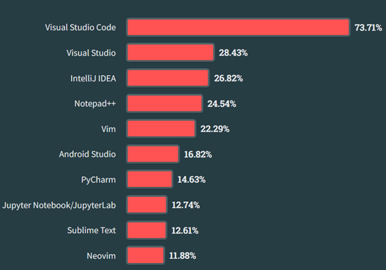

原始碼編輯器（程式碼編輯器）是一種工具，主要在提供寫程式的工程師們許多有用的功能
諸如你可以從軟體上面看到五顏六色的各種語法標記（Syntax Highlighting）與其他常用的功能
例如：剪下複製貼上、快速縮排、重構程式碼等等，都必須要透過原始碼編輯器才可能做到。
這個世界上有很多不同的原始碼編輯器，在眾多的原始碼編輯器中，只需要一個挑選的原則。
自己喜歡或者習慣的就好！
自己喜歡或者習慣的就好！
自己喜歡或者習慣的就好！
基本上不必太糾結於其他人會用甚麼的編輯器，只要在乎自己習慣或喜歡的編輯器就好了。
接下來，我們會介紹幾個常見的編輯器。
Visual Studio Code又稱為VScode，是由微軟開發，是一開放原始碼與免費的原始碼編輯器。
由於有著很簡潔又簡單的介面，與此同時也有很複雜的設定，使得其成為很有彈性的原始碼編輯器
變成新手好入門，而老手可以依照自己的需求去設定自己想要的介面，便躍升成為在軟體開發者間最常使用的編輯器。
除了彈性的設定外，還有著能夠支援大部分程式語言的語法標記的強大功能，以及社群對於其撰寫的附加元件（extension）都是Vscode的主力喔！
以下是
StackOverFlow（非常知名的程式論壇網站，只要一找關於程式的問題，一定知道它的存在。）所製作的2023年年度調查。

以上為StackOverFlow在2023年的年度報告
PyCharm作為JetBrains為了Python社群所開發的原始碼編輯器，其實介面設計與
InetlliJ（一個撰寫Java的原始碼編輯器）非常相似。
PyCharm有個很好的優點，除了他與Intellij有著一樣的介面，同時他也非常嘮叨。對於程式碼格式上的要求非常嚴格。
以及他有著很不錯的Class（類別，隨後會教到），Function（函式，隨後也會教到），跳轉的功能。
但有著一個缺點，非常吃電腦資源，根據一篇
SOF的問題所述
PyCharm可以一次就吃到1.5G的RAM，造成可能沒辦法一次開太多實況掛台，跟聽YT音樂的情形。（假設你的電腦比較差點）